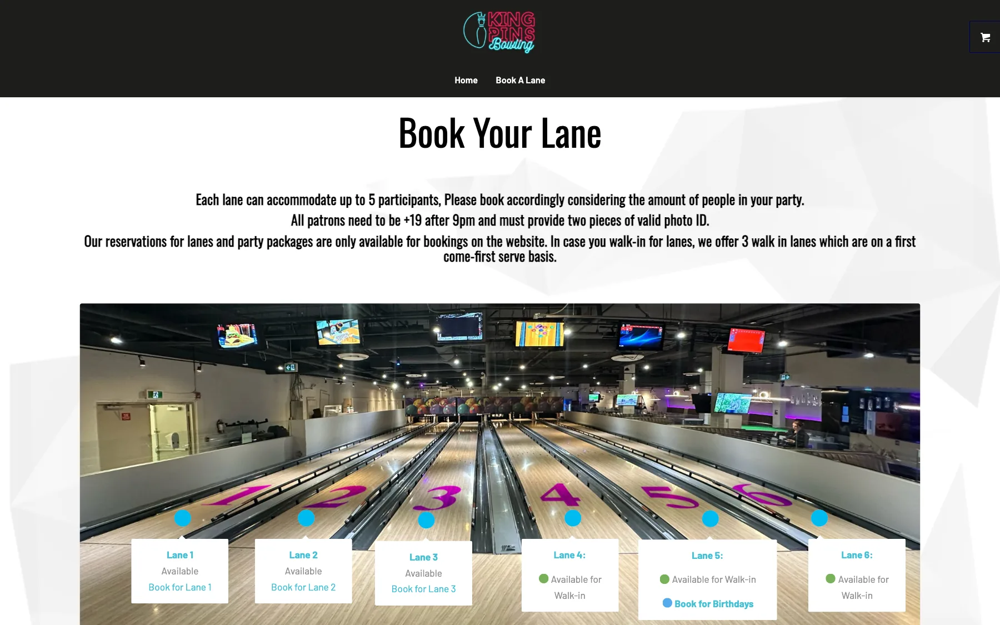
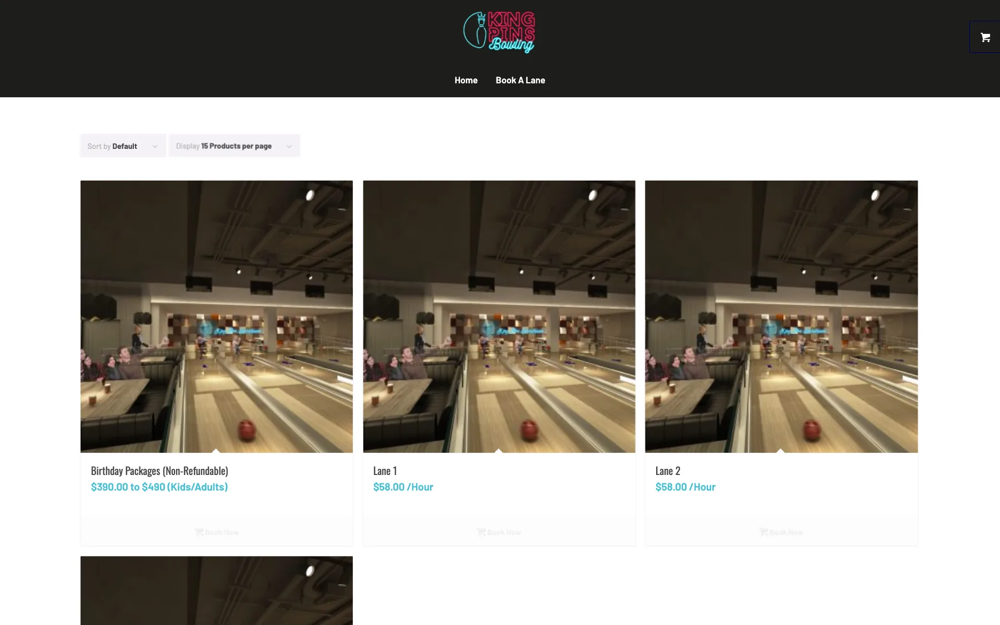

Booking used to live on a second site.
The old booking.kingpinsbowl.ca was a WordPress shop, apart from the main site, and every bookable lane was its own product. Now booking is part of the venue’s site, on a map of the real floor.


- BeforeAfter
- A separate WordPress shop with its own look, linked from the main site.One site. Booking is a section of the home page.
- A photo of the lanes with a card per lane. Lanes 1 to 3 each opened their own product page.Pick bowling, pool or snooker on a map of the floor, then a time, then pay on the same card.
- The rules sat in a paragraph above the photo: players per lane, ID after 9 PM, three walk-in lanes.The booking applies them: six per lane, three lanes online, three kept for walk-ins. Bookings never clash: the same lane can’t be sold twice for the same time, even if two guests book at the same moment.
Before: booking.kingpinsbowl.ca on 21 January 2024, from the Internet Archive. After: kingpinsbowl.ca, November 2026.
Party packs used to book like a lane.
The old shop sold birthday packages the same way as lanes: a calendar and any hour, kitchen open or not. Now each pack shows what’s inside and its price, and only offers start times after the kitchen opens.


- BeforeAfter
- Every product used the same photo of the lanes.Each pack has its own photos, guest count, lanes and what’s inside.
- Birthday packages were booked on a calendar like a lane, at any hour.Packs can’t start before the kitchen opens at 5 PM, and the site says why.
- A lane’s page still showed the WordPress log-in box and shop reviews from 2021.No accounts. Email and phone, and a booking takes under a minute.
Before: booking.kingpinsbowl.ca on 27 January 2024, from the Internet Archive. After: kingpinsbowl.ca, November 2026.
The back office moved onto staff phones.
A web app staff add to their home screen. No app store, and every fix reaches them the moment it ships.
Timeline, list and calendar views. Alerts only for bookings that need prep, so nobody learns to ignore them.
Shown with the demo bookings built into the app, not real guests.

- Money to chase sits on top: Groupon codes and unpaid payment links.
- The next shift at a glance.
- Lane, length and total on every booking, so nobody opens Stripe.
Motion, 3D and the venue’s brand.
Pick an activity and GSAP eases the floor map into that zone. Poster scenes are staged and lit in Blender. I also make the venue’s posters, sandwich boards and Instagram content in the same look as the site.


Lane-linked food orders, then tournaments.
QR ordering tied to the lane booking, so food orders reach the kitchen already tagged to the right lane. The venue’s Clover till can’t do that.
After that, events: tournaments, a live leaderboard and a what’s-on listing. Sign-ups for the first tournaments are already open.